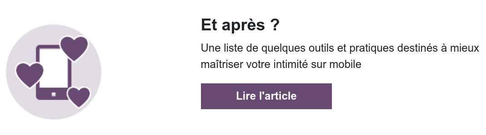
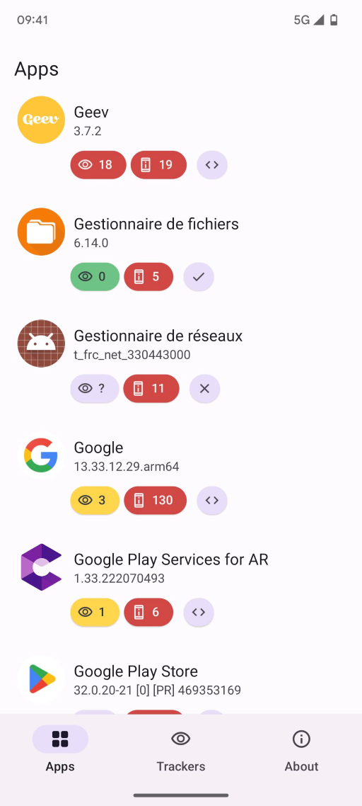
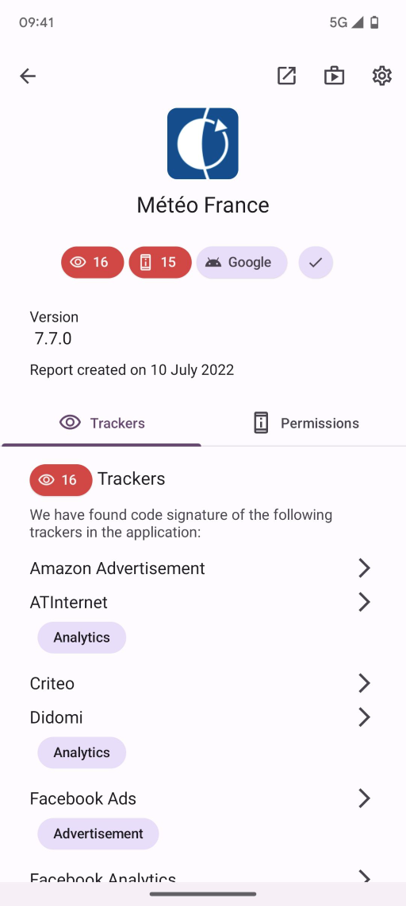

Exodus Privacy
Exodus Privacy — XXX
Qui sommes-nous ?
De quoi allons-nous vous parler ?
- Du comportement des applications mobiles et des conséquences sur notre vie privée
- De ce que Exodus Privacy fait à ce sujet
Exodus Privacy
- Un groupe d'hacktivistes français·e·s
- Une association loi 1901 créée en octobre 2017
- Une petite dizaine de personnes bénévoles actives
- Des règles légales strictes
- Nos outils sont libres et open source
Notre objectif
Informer le public de la collecte de données faite par les applications de nos téléphones portables
Comment on fait ?
- Nous développons la plateforme d'audit εxodus
- Nous identifions les pisteurs par leurs signatures
- Nous faisons de l'analyse statique des fichiers
APK
Nous développons des outils permettant de savoir ce qu'il se passe dans les applications Android.

C'est quoi un pisteur ?
Un pisteur est un bout de logiciel dont le but est la collecte de données à propos de vous ou de vos usages.
Comme Ogury, Google Analytics, Teemo, et beaucoup d'autres.
Comment on les détecte ?
Analyse statique
- Listing des classes Java présentes dans l'APK
- Détection des classes correspondant à la signature de pisteurs
Les outils utilisés :
- API Google Play/F-Droid : Télécharge les APK et récupère les détails des applications
- Apkeep: Télécharge les APK du magasin Google Play (maintenu par l'EFF)
- Androguard: récupère les permissions, version du code et certificats
- Dexdump: extrait la liste des classes de l'APK
Analyse statique

Analyse statique

La plateforme εxodus
- Rechercher une application via son moteur de recherche
- Analyser une application Android en soumettant son identifiant
- Obtenir des astuces pour mieux maîtriser sa vie privée

reports.exodus-privacy.eu.org
Nos conseils 💡
- Réfléchir à ses propres usages
- Privilégier des applis libres
- Utiliser le site mobile à la place de l'application
- Installer un bloqueur de publicités
- Rester curieux⋅se !

Plus de détails sur la plateforme εxodus
L'application Android Exodus
Montre les pisteurs et permissions requises des applications de votre ordiphone


Disponible sur F-Droid et Google Play !
Outil d'analyse locale
exodus-standalone
- Outil εxodus en ligne de commandes pour analyser localement un APK
- Peut être utilisé pour scanner une application avant sa publication
- Affiche des rapports au format texte ou JSON
- Disponibe en tant qu'image Docker pour faciliter son utilisation
github.com/Exodus-Privacy/exodus-standalone
ETIP
εxodus Tracker Investigation Platform
- La base de données des pisteurs εxodus
- Ouverte à toutes et tous, et alimentée par la communauté
- Principales fonctionnalités :
- Suivre toutes les modifications sur les pisteurs
- Détecter les doublons de signature
etip.exodus-privacy.eu.org
Ce qui a été fait depuis notre lancement
Depuis le 24/11/2017 - première version publique - nous avons…
- identifié +432 pisteurs, analysé +180 000 apps pour +405 000 rapports
- réalisé des audits détaillés d'applications comme Deliveroo Rider ou Baby+
- fourni des statistiques et des jeux de données à des journalistes et analystes
- mis à disposition une API REST
- créé des animations pour expliquer les pisteurs dans les applications
- créé un kit pédagogique pour les médiateurices numériques
Tout est libre et open-source 🎄
Les pisteurs les plus fréquents sur +159k applications

Partage — Communication & Presse
Communication
- Notre blog : exodus-privacy.eu.org/fr/posts
- Réseaux sociaux : Mastodon, Twitter, Facebook, Peertube, Youtube
- Des présentations comme celle d'aujourd'hui ☺
Dans la presse
- Des articles sur nos travaux : Le Monde, The intercept, Next Inpact, Cash Investigation
- Des interviews : Le code à changé (France Inter)
- Plus de liens sur notre page presse : exodus-privacy.eu.org/fr/page/press
Partage — Monde académique
Les chercheuses et chercheurs s'emparent de nos outils
- Via notre API REST publique et gratuite
- INRIA, INSA, CNIL
- Des étudiant·e·s/doctorant·e·s dans les domaines de la vie privée et des technologies
- Nos travaux sont cités par :
- Des insitutions
- Des universitaires
- L'âge du capitalisme de surveillance, Shoshana Zuboff
Partage — Analyses spécifiques
Des analyses poussées avec des journalistes
Partage — Kit pédagogique
Création d'un kit à destination des médiatrices et médiateurs numériques
- 2 kits : Un kit débutant⋅e & un kit confirmé⋅e (en cours)
- Pour faire des ateliers de 1h30
- Dans chaque kit : un guide, une vidéo, un diaporama, une fiche de synthése
- Projet financé par la Fondation AFNIC
Ce dont nous avons besoin
Nous sommes une organisation à but non lucratif, animée par des bénévoles.
Pour survivre, il nous faut :
- Des contributions
- Du partage de bonne parole
- Des humains surtout …
- De l'argent aussi (un peu)
exodus-privacy.eu.org/fr/page/contribute


 Code Lutin
Code Lutin Codeurs en liberté
Codeurs en liberté
 Gandi
Gandi La Quadrature du Net
La Quadrature du Net Octopuce
Octopuce Yale Privacy Lab
Yale Privacy Lab
 Framasoft
Framasoft Fondation AFNIC
Fondation AFNIC Debamax
Debamax